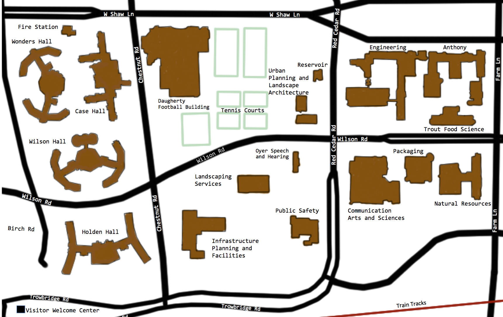
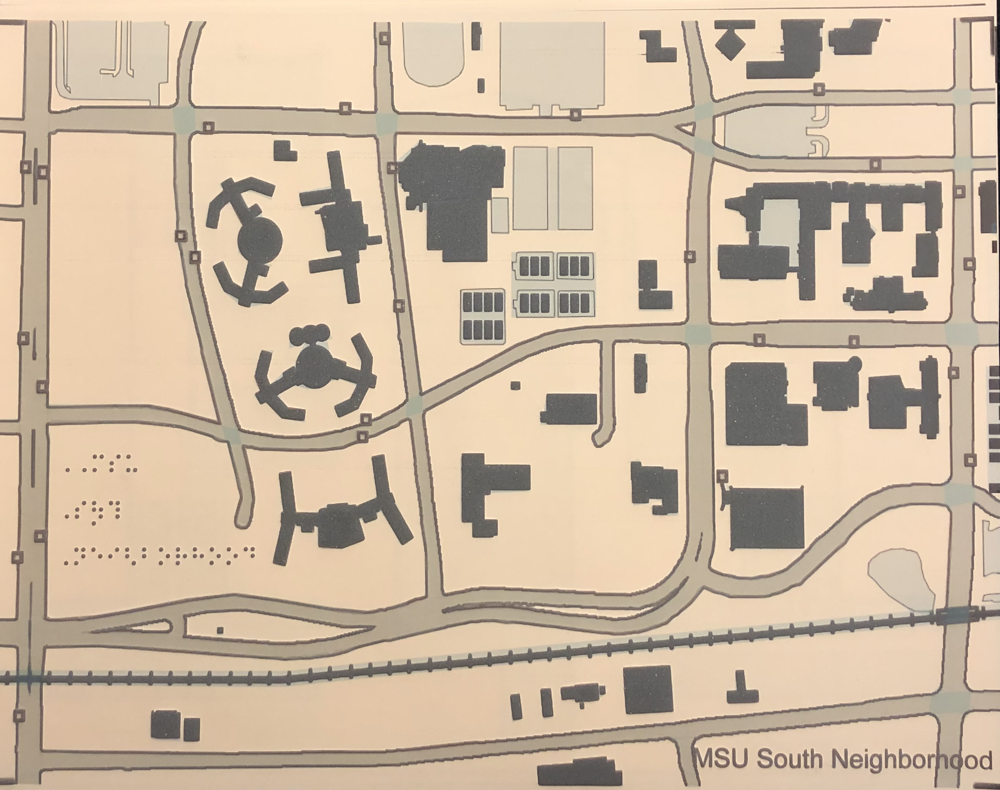

Helping blind and visually-impaired students navigate on campus
I worked with a team of engineering majors, in collaboration with the Resource Center for Persons with Disabilities, to create a tactile map of Michigan State University’s campus. Our work currently assists blind and visually-impaired students navigate on campus.
The challenge
- Learning existing best practice for tactile maps.
- Innovating ways to simplify when necessary while preserving details.
- Familiarizing ourselves with IVEO technology, and braille.
Our approach
- Discussing challenges and possible solutions with blind and visually-impaired students.
- Using research to guide brainstorming sessions.
- Designing, printing, and programming responsive, tactile maps of campus.
my role
Design Engineer
project type
Student Project
project duration
1 Month
tools
IVEO technology
Braille maps help students gain a concept of their surroundings
My team met with blind and visually impaired students to learn about their day-to-day challenges navigating campus. We did our best to use their input to create a map and interface that best suits their needs.
A major challenge for blind students is gaining a concept of their surroundings. Our research found that braille maps can help with this challenge, but are often hard to find. We determined that a tactile map of campus would provide new and current students with a better way of understanding their surroundings.
Innovating ways to manage clutter
Our initial solution was to create a single tactile map of campus, but we soon discovered that it was difficult to include all necessary information. To improve students’ overall experience, I proposed we divide the map into separate categories.
We also decided to include IVEO technology which could audibly relay names of features to the user by pressing down on the map. These solutions greatly improved the experience by reducing clutter.

Talking & tactile maps
Our team developed multiple state-of-the-art tactile maps that allow blind and visually impaired students to easily explore Michigan State University's main campus. The map allows the user to virtually tour the campus hearing the names of buildings, roads, and other landmarks when pressed. The map also provides a mode whereby a student may type the name of a campus landmark with the computer providing directional cues for locating the feature.
